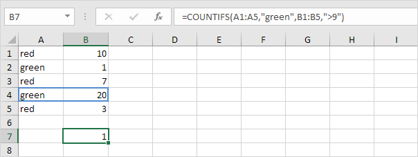
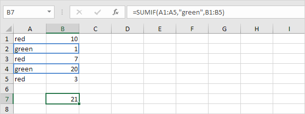

Count
Untuk menghitung jumlah sel yang berisi angka, gunakan fungsi COUNT.

Catatan: untuk menghitung sel kosong dan tidak kosong di Excel, gunakan COUNTBLANK dan COUNTA.
Fungsi Count dan Sum
Count | Countif | Countifs | Sum | Sumif | Sumifs
Fungsi yang paling banyak digunakan di Excel adalah fungsi count dan sum. Anda dapat menghitung dan menjumlahkan berdasarkan satu kriteria atau beberapa kriteria.
Untuk menghitung jumlah sel yang berisi angka, gunakan fungsi COUNT.
Catatan: untuk menghitung sel kosong dan tidak kosong di Excel, gunakan COUNTBLANK dan COUNTA.
Untuk menghitung sel berdasarkan satu kriteria (misalnya, lebih besar dari 9), gunakan fungsi COUNTIF berikut.

Catatan: kunjungi halaman kami tentang fungsi COUNTIF untuk lebih banyak contoh.
Untuk menghitung baris berdasarkan beberapa kriteria (misalnya, hijau dan lebih besar dari 9), gunakan fungsi COUNTIFS berikut.

Untuk menjumlahkan rentang sel, gunakan fungsi SUM.

Catatan: kunjungi halaman kami tentang fungsi SUM untuk lebih banyak contoh.
Untuk menjumlahkan sel berdasarkan satu kriteria (misalnya, lebih besar dari 9), gunakan fungsi SUMIF berikut (dua argumen).

Untuk menjumlahkan sel berdasarkan satu kriteria (misalnya, hijau), gunakan fungsi SUMIF berikut (tiga argumen, argumen terakhir adalah rentang yang akan dijumlahkan).

Catatan: kunjungi halaman kami tentang fungsi SUMIF untuk lebih banyak contoh.
Untuk menjumlahkan sel berdasarkan beberapa kriteria (misalnya, lingkaran dan merah), gunakan fungsi SUMIFS berikut (argumen pertama adalah rentang yang akan dijumlahkan).

Catatan umum: dengan cara yang sama, Anda dapat menggunakan fungsi AVERAGEIF untuk rata-rata sel berdasarkan satu kriteria dan fungsi AVERAGEIFS untuk rata-rata sel berdasarkan beberapa kriteria.